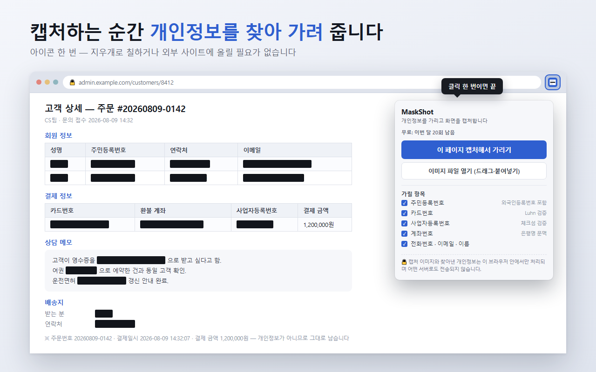
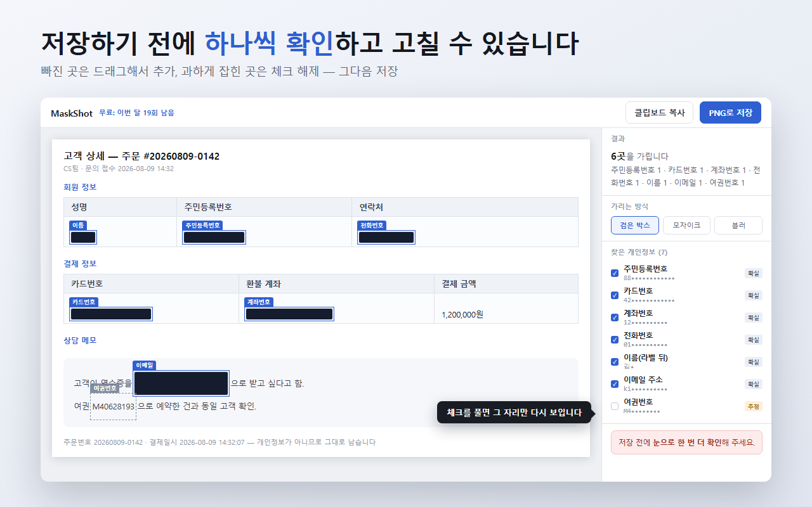

캡처 이미지에서 개인정보 패턴을 자동으로 찾아 가려 주는 Chrome 확장 프로그램입니다.
Chrome 웹 스토어에서 설치하기 무료로 시작할 수 있습니다. 저장·복사 월 20회까지 무료입니다.
업무 화면을 캡처해 공유하려면 주민등록번호, 카드번호, 계좌번호, 전화번호 같은 항목을 그림판이나 이미지 편집 도구로 하나씩 찾아 지워야 합니다. 놓치기 쉽고 시간도 걸립니다. 이 확장 프로그램은 캡처한 화면에서 개인정보로 보이는 부분을 자동으로 찾아 그 자리에 가림 처리를 해 줍니다.

이미지를 다시 분석하는 것이 아니라 페이지의 텍스트를 직접 읽어 위치를 계산하는 방식이라 가림 위치가 정확합니다.
Ctrl+V로 붙여넣습니다.글자 인식에는 Tesseract.js를 사용하며, 이 엔진은 확장 프로그램 안에 함께 들어 있습니다. 이미지를 어딘가로 올려 분석하는 방식이 아니므로 인터넷 통신이 발생하지 않습니다.
| 주민등록번호 | 외국인등록번호 포함. 체크섬으로 검증합니다. |
|---|---|
| 카드번호 | Luhn 검증을 통과한 번호만 인식합니다. |
| 사업자등록번호 법인등록번호 | 체크섬으로 검증합니다. |
| 계좌번호 | 주변의 은행명 등 문맥을 함께 참고합니다. |
| 전화번호 | 휴대폰, 지역번호, 대표번호, 안심번호. |
| 이메일 | 메일 주소 형태의 문자열. |
| 운전면허번호 · 여권번호 | 번호 형식을 기준으로 인식합니다. |
| 이름 | 성명:, 예금주 같은 라벨 뒤에 오는 이름. |
| 주소 | 기본값은 꺼져 있습니다. 필요할 때 켤 수 있습니다. |
| IP 주소 | 기본값은 꺼져 있습니다. 필요할 때 켤 수 있습니다. |
| 사용자 지정 단어 | 직접 입력한 단어를 추가로 찾습니다. |
항목은 하나씩 켜고 끌 수 있어, 필요한 것만 가리도록 조정할 수 있습니다.
외부에 공개할 이미지라면 검은 박스를 권장합니다. 모자이크와 블러는 원래 픽셀 정보가 일부 남기 때문에, 이론적으로 복원을 시도하는 것이 가능합니다.
Ctrl+Z로 되돌리기
| 무료 | 저장·복사 월 20회. 매월 1일에 자동으로 초기화됩니다. 이미지 파일 모드의 OCR은 무료 체험 10회를 사용할 수 있습니다. |
|---|---|
| Pro | ₩9,900 · 평생 라이선스 1회 결제로 저장·복사 무제한, OCR 무제한. PC 3대까지 등록할 수 있습니다. 구독이 아니며 기간 만료가 없습니다. 구매와 라이선스 키 발급은 결제 처리사 Lemon Squeezy가 담당합니다. |
아직 설치하지 않으셨다면 먼저 Chrome 웹 스토어에서 설치하고 무료로 써 보신 뒤에 구매하셔도 됩니다.
결제가 끝나면 입력하신 이메일로 라이선스 키가 자동으로 발송됩니다. 메일이 보이지 않으면 스팸함도 확인해 주세요.
XXXXXXXX-XXXXXXXX-… 형태입니다)무료 사용량이 남아 있어도 언제든 등록할 수 있습니다. 한도를 다 써야만 입력칸이 열리는 방식이 아니므로, 두 번째·세 번째 PC에도 설치하자마자 바로 키를 넣으시면 됩니다.
같은 키로 PC 3대까지 등록할 수 있습니다. 기기를 교체해 등록 가능 대수를 넘겼다면 메일로 문의해 주시면 초기화해 드립니다.
iframe 안에 있는 내용은 페이지 캡처 모드에서 좌표를 잡지 못합니다.
이 경우 캡처된 이미지에서 직접 드래그해 가려 주세요.개인정보를 수집하지 않습니다. 캡처한 이미지와 찾아낸 내용은 사용자의 브라우저 안에서만 처리됩니다. 자세한 내용은 개인정보처리방침을 확인해 주세요.
버그 제보, 기능 요청, 라이선스·환불 문의는 pygichacha@gmail.com 으로 보내주세요. 보통 하루 안에 답장드립니다.